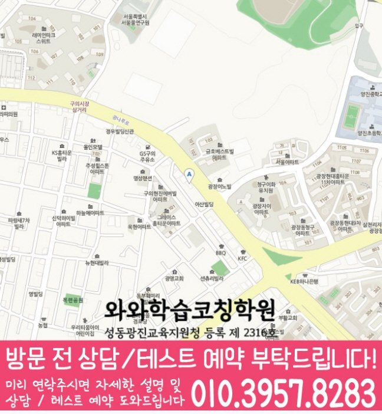

서울 · 광장점
광장동 고1 수학학원
- 수학 안내 학년
- 고1
- 방문 주소
- 서울 광진구 광나루로 584 동서울빌딩 5
현재 모집 여부와 수업 시간표는 광장점 상담에서 확인해 주세요.
광장점 기본정보와 수강 조건
방문 주소와 실제 지점
서울 광진구 광나루로 584 동서울빌딩 5
광장동 안내에 연결된 실제 학원은 와와학습코칭학원입니다.
광장점 지점 전체 안내학원 등록 정보
성동광진교육지원청 등록 제 2316호
과목별 수강 학년
광장점의 안내 범위는 수학 고1입니다. 현재 모집 과정과 시간표는 과목별로 확인해 주세요.
운영 안내와 상담 시간
평일 오후 2시 30분 이후
주말 수업의 운영 여부와 과목별 시간은 방문 전 센터에 확인해 주세요.
운영 안내는 학생의 고정 수업 시간표를 뜻하지 않습니다. 하교 시각과 가능한 요일을 함께 전달해 주세요.
건물과 입구 확인
올림픽대교 북단 사거리 바로 앞 동서울빌딩 5층입니다.
광장점 학습 관리 방식
- 플래너를 관리하고 방학·시험 대비 특강으로 보완 학습을 진행합니다.
학생의 학년과 신청 과목에 적용되는 세부 방식은 상담에서 확인해 주세요.
광장점 교습비 안내
게시표 기준일: · 광장점 교습비 게시표 원문
아래는 게시표에서 수학이 포함된 고등 등록 과정을 옮긴 안내입니다. 총 교습시간은 해당 교습기간 전체의 시간이며, 하루 수업 시간을 뜻하지 않습니다.
| 등록 과정 | 기간·교습시간 | 교습비 |
|---|---|---|
| 고등수학향상1 | 1개월 총 126분 | 25,000원 |
| 고등수학향상2 | 1개월 총 252분 | 50,000원 |
| 고등수학향상3 | 1개월 총 378분 | 75,000원 |
| 고등수학향상4 | 1개월 총 504분 | 100,000원 |
| 고등수학향상5 | 1개월 총 630분 | 125,000원 |
나머지 3개 등록 과정 보기
| 등록 과정 | 기간·교습시간 | 교습비 |
|---|---|---|
| 고등수학3 | 1개월 총 798분 | 170,000원 |
| 고등수학2 | 1개월 총 1197분 | 255,000원 |
| 고등수학1 | 1개월 총 1995분 | 425,000원 |
게시표의 등록 금액과 현재 모집·적용 금액은 다를 수 있습니다. 신청 학년과 과목, 주당 횟수·회당 시간, 교재비·추가 프로그램을 포함한 총비용을 상담에서 확인해 주세요.
광장동 학교 자료와 상담 준비
학교 목록은 지역 상담에 참고할 정보입니다. 학교와의 제휴, 재원생 현황이나 특정 시험 대비반 운영을 뜻하지 않습니다.
고등학교 참고 목록
건국대학교사범대학부속고등학교 · 광남고등학교 · 단대부고
현재 배우는 수학 과목명과 교과서 단원, 최근 학교 평가 범위를 준비해 주세요. 직접 쓴 풀이에서 혼자 해결한 부분과 질문이 필요한 부분을 나눠 봅니다.
고1 수학 상담에 준비할 내용
광장동에서 광장점 수강을 알아볼 때, 아래 자료로 학생에게 필요한 도움을 설명해 주세요.
학교 진도와 시작 단원
학교에서 사용하는 수학 교과서의 과목명과 현재 단원을 적어 주세요. 기본 예제에서 막힌 문제가 있다면 이전에 배운 개념과 계산 중 어느 부분에서 멈췄는지 표시합니다.
풀이 과정으로 질문 준비
틀린 문제 2~3개와 학생이 직접 쓴 풀이를 준비하세요. 문제 조건을 식으로 바꾸지 못했는지, 계산에서 틀렸는지, 답의 근거를 설명하기 어려운지 나누면 상담 질문이 구체적입니다.
수업 계획을 상담에서 확인
현재 단원의 복습과 다음 진도를 어떻게 배분할지, 숙제 확인과 오답 재풀이를 어떻게 진행할지 질문해 주세요. 정해진 교재·시간표·관리 방식은 해당 지점에서 확인합니다.
상담을 준비하는 방법입니다. 지점의 확정 교재나 수업 과정은 상담에서 확인해 주세요.
지도와 학습 안내 이미지

학습 안내 이미지 펼쳐보기


원자료의 센터명과 주소를 기준으로 표시한 정보입니다. 방문 전에 주소, 입구와 이동 경로가 현재 안내와 같은지 확인해 주세요.
FAQ
광장동 고1 수학 자주 묻는 질문
고1 수학 대상 학년은 원자료에서 어떻게 확인하나요?
광장점의 안내 범위는 수학 고1입니다. 현재 모집 과정과 시간표는 과목별로 확인해 주세요.
광장동 고등학교 참고 정보는 무엇인가요?
학교 참고 목록은 이 페이지의 학교 자료 섹션에서 확인하세요. 실제 배우는 단원과 평가 범위는 학교 자료를 기준으로 합니다.
광장동 센터 주소와 위치 안내는 어디에서 확인하나요?
서울 광진구 광나루로 584 동서울빌딩 5. 건물과 층수를 대조하고 상담 시각을 확인한 뒤 방문해 주세요.
광장동 교습비 정보는 어떻게 확인하나요?
광장점 교습비 게시표의 기준일·등록 과정·교습기간과 금액을 이 페이지의 교육비 안내에서 확인할 수 있습니다. 현재 적용되는 과정과 교재비·추가 프로그램을 포함한 총비용은 상담에서 확인해 주세요.
RELATED GUIDES
광장동 관련 학년·과목과 인근 지역
같은 지역의 다른 학년·과목과 가까운 지역 페이지를 구분해 연결했습니다.
실제 지점과 학년별 공부 안내
함께 읽는 교육정보
학습 안내를 읽었다면 공부 계획과 시험 준비도 함께 살펴보세요.
우리 아이의 공부 순서를 살펴보세요
지금 살펴본 학년과 과목의 공부 순서·확인 과제·수준별 연습 방법을 함께 읽어 보세요.
학습 예시와 지점의 개설 수업은 다를 수 있으므로 수강 조건도 함께 확인하세요.